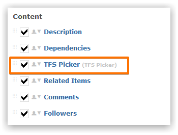
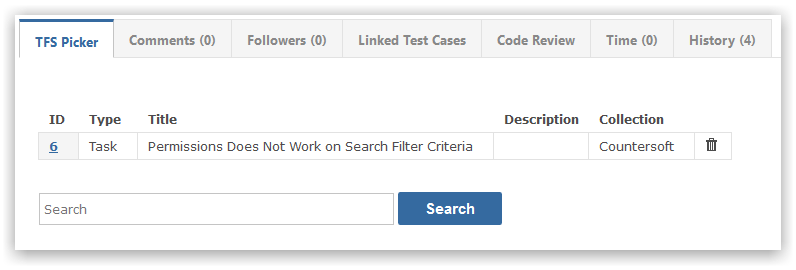

The Gemini connector for Microsoft TFS allows users to associate TFS Work Items with items in Gemini.
The TFS Picker app for Gemini is available to Enterprise package customers. Simply place the TFS App package into the App_data/Apps Gemini folder.
Once installed, the Gemini TFS Picker should be activated by modifying Screen setup.

When viewing an item you can view and asssociate TFS Work Items.

You can perform a keyword search to find items in TFS and associate them with the item in Gemini.

To connect and enable Alternate Authentication, please review the following Microsoft documentation: Microsoft TFS Alternate Authentication Guide